Red Bull
Основана как Jaguar Racing в 2004 году, затем стала Red Bull Racing. Известна своим доминированием в начале 2010-х годов.
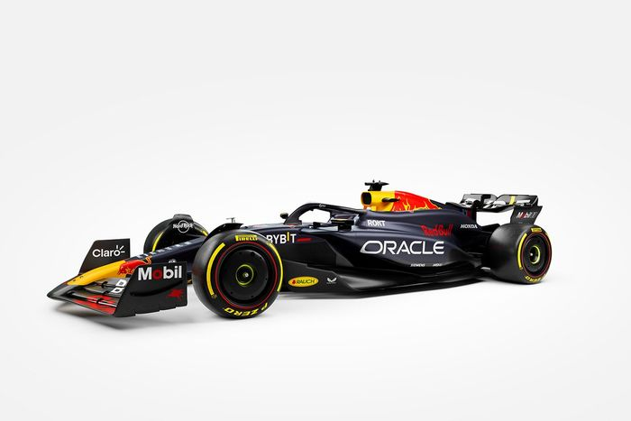Основана как Jaguar Racing в 2004 году, затем стала Red Bull Racing. Известна своим доминированием в начале 2010-х годов.
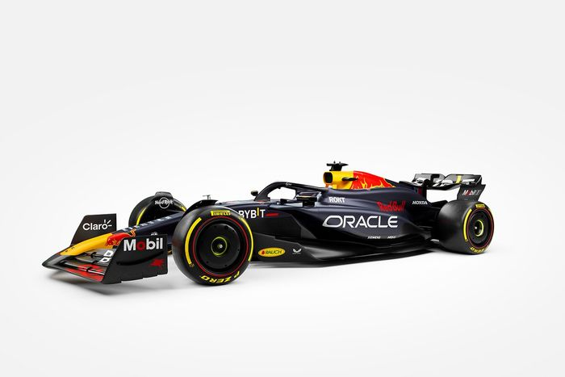Самая старая и легендарная команда в Формуле 1, основана Энцо Феррари в 1947 году, она является символом гонок.
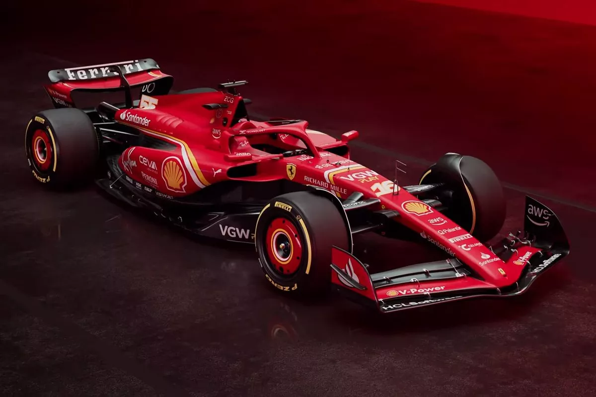Основана Брюсом Маклареном в 1963 году, известна своей инновационностью и успешной историей.
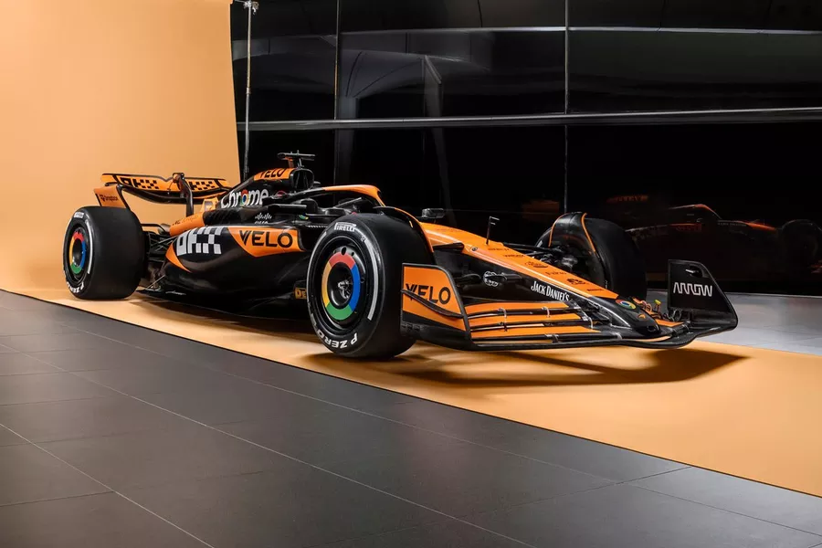Вернулась в Формулу 1 как заводская команда в 2010 году и доминировала в эпоху гибридных двигателей.
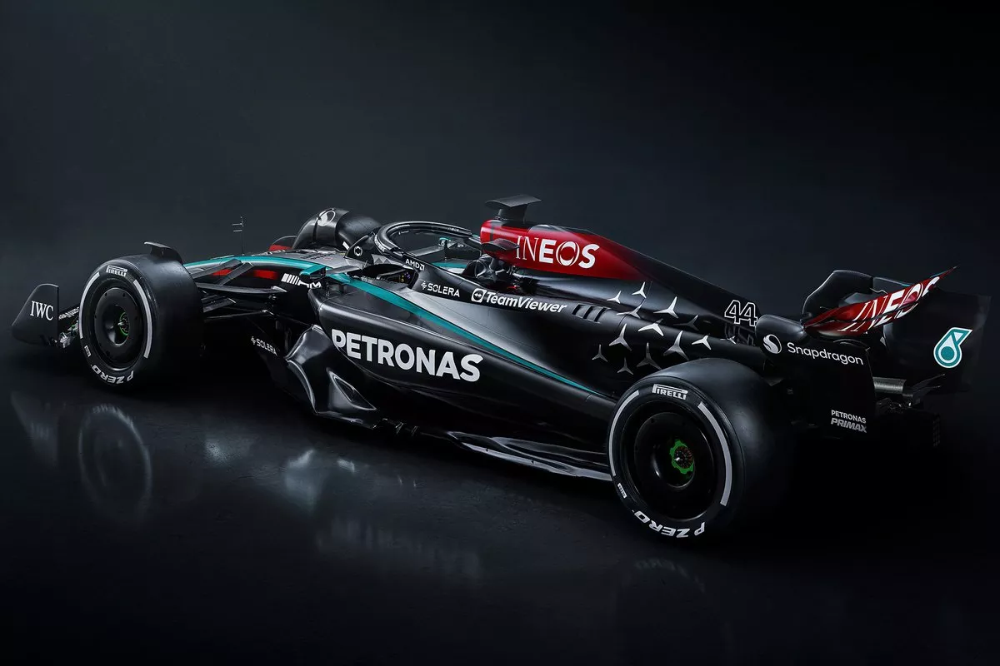Возвращение знаменитого бренда в Формулу 1 с 2021 года, ранее известного как Racing Point и Force India.
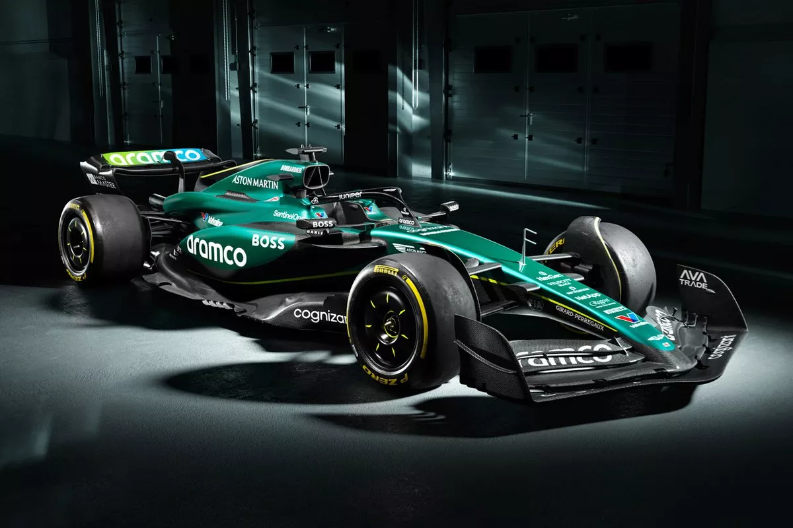Переименована из Renault в 2021 году, французская команда с долгой историей участия в автоспорте.
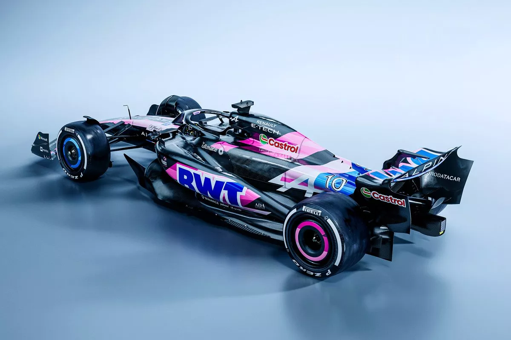Работает в партнерстве с Sauber, имеет глубокие корни в гонках, начиная с первого чемпионата Формулы 1.
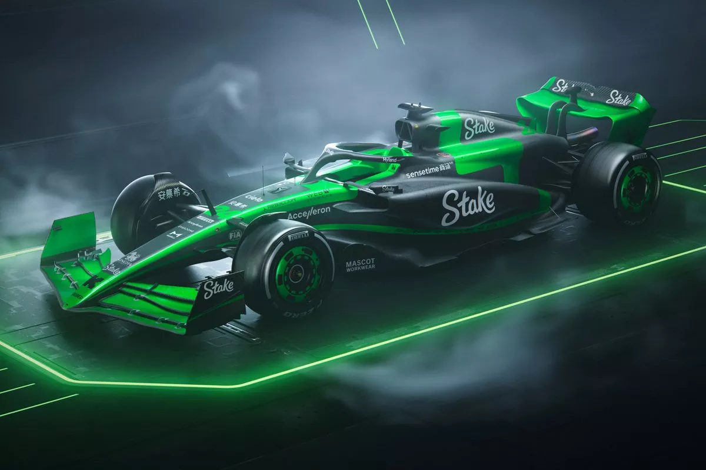Американская команда, основана Джином Хаасом в 2016 году, известна стремлением привнести американский бренд в Формулу 1.
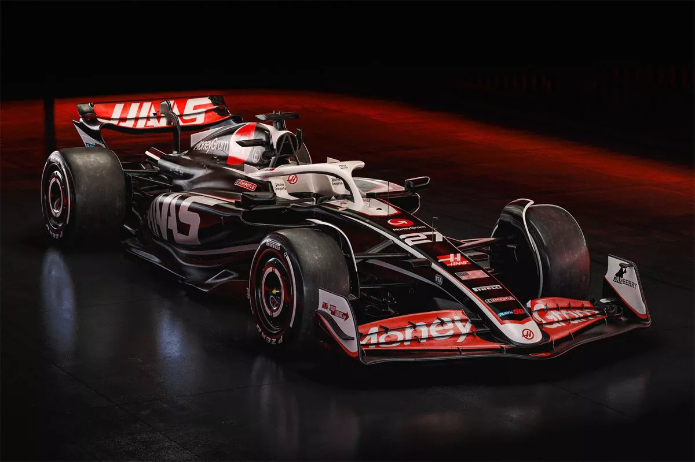Одна из самых успешных команд в истории, основана Фрэнком Уильямсом в 1977 году, переживает период реорганизации.
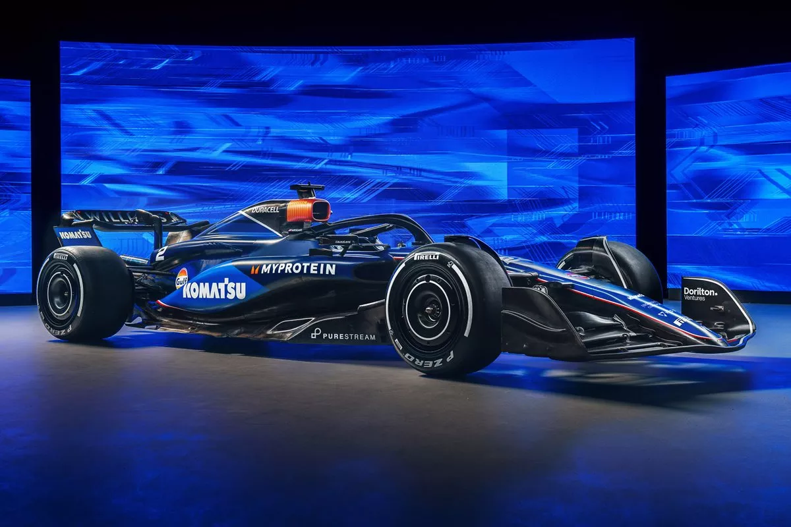Ранее известна как Toro Rosso, служит сестринской командой Red Bull с 2006 года, предоставляя место для молодых талантов.
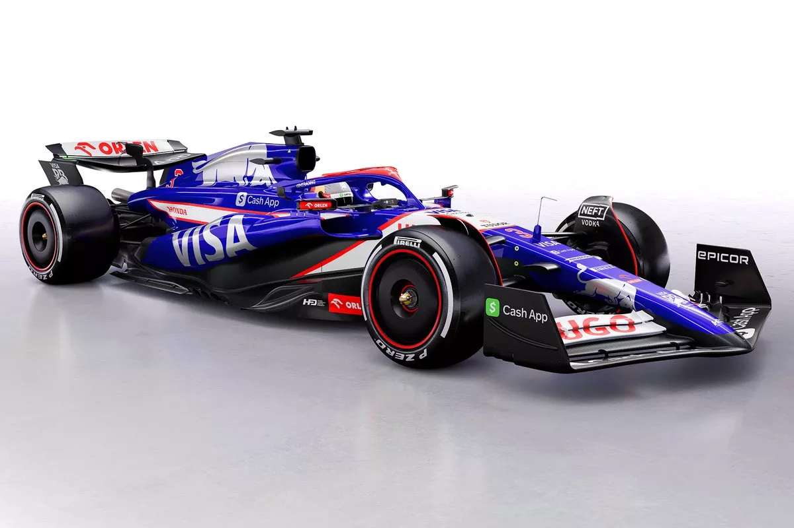